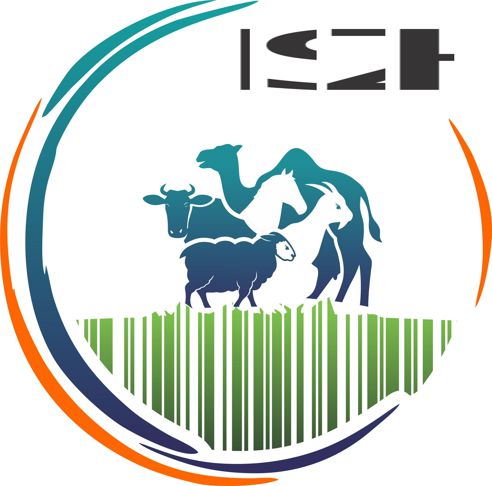

Информационная система «Идентификация сельскохозяйственных животных» и мобильное приложение «ISZH Mobile»
Предназначена для ведения ветеринарного учета и обеспечения прослеживаемости жизненного цикла животных, предусматривающая единую, многоуровневую систему регистрации данных об индивидуальном номере животного, о его ветеринарных обработках (кратности вакцинации и исследований), включая результаты диагностических исследований, о применении ограничительных мероприятий (карантина) и введения запрета на перемещение животных при выявлении болезней и отсутствии проведения ветеринарных мероприятий, а также данных о владельце животного, осуществляемая специалистами в области ветеринарии и уполномоченным органом.
В ИС ИСЖ предусмотрен функционал по:
- - автоматизации идентификации сельскохозяйственных животных;
- - отображению общего реестра зарегистрированных животных;
- - поиску животных;
- - реестру сельскохозяйственных производственных кооперативов (СПК);
- - проведенным ветеринарно-профилактическим мероприятиям (вакцинация);
- - проведенным диагностическим исследованиям (диагностика);
- - снятию животных с учета по различным причинам;
- - выдаче ветеринарного паспорта;
- - карантинированию животных;
- - отчетным данным;
- - для входа через личный кабинет ветеринарного врача;
- - для входа через личный кабинет сотрудника территориальной инспекции;
- - для входа через личный кабинет сотрудника уполномоченного органа.
В «ISZH Mobile» для ветеринарных врачей предусмотрен функционал по:
- - отображению общего реестра зарегистрированных животных;
- - регистрации животного по причине «приплод»;
- - отображению реестра описей РВЛ;
- - поиску животных;
- - направлению животных в аренду;
- - снятию животных с учета по различным причинам;
- - подгрузке данных в «Оффлайн» режиме;
- - для входа через личный кабинет ветеринарного врача.
Нормативные правовые акты:
- Закон Республики Казахстан «О ветеринарии» от 10 июля 2002 года N 339 https://adilet.zan.kz/rus/docs/Z020000339_
- Правила идентификации сельскохозяйственных животных, утвержденных приказом Министра сельского хозяйства Республики Казахстан от 30 января 2015 года № 7-1/68 https://adilet.zan.kz/rus/docs/V1500011127#z1
- Правила формирования и ведения базы данных по идентификации сельскохозяйственных животных и выдачи выписки из нее, утвержденных приказом Министра сельского хозяйства Республики Казахстан от 2 июня 2010 года № 367 https://adilet.zan.kz/rus/docs/V100006321_#z5